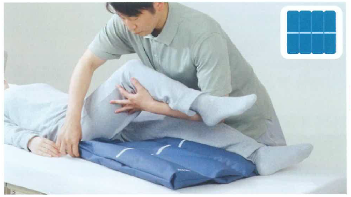
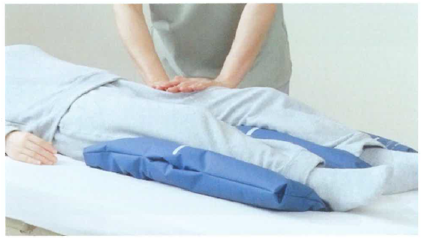
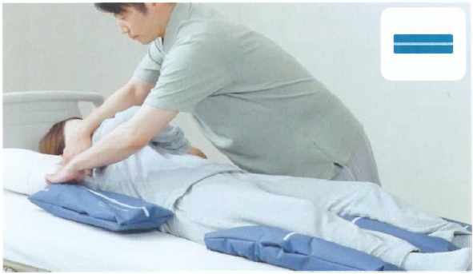
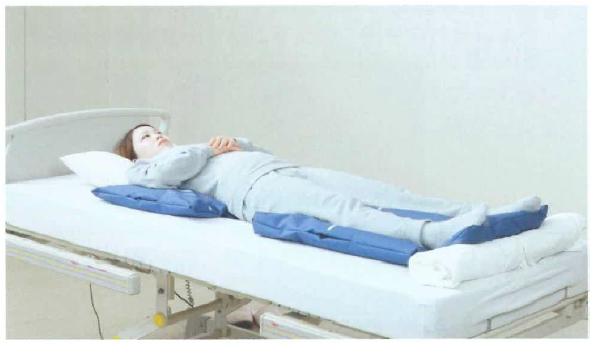
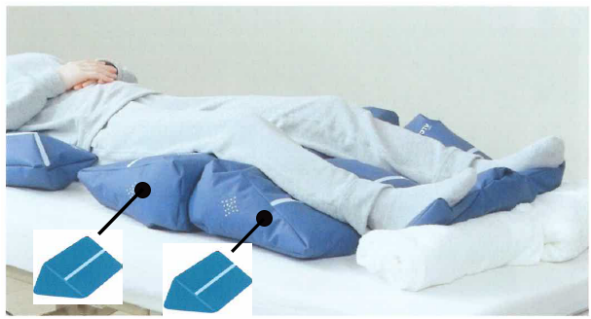
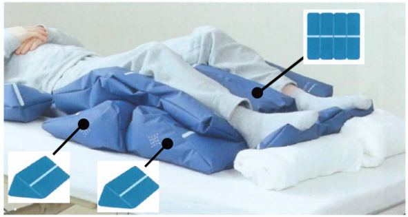
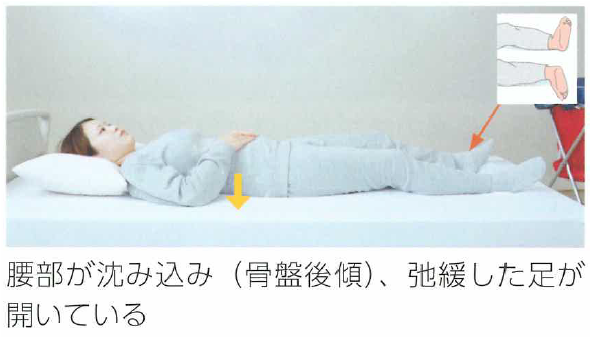
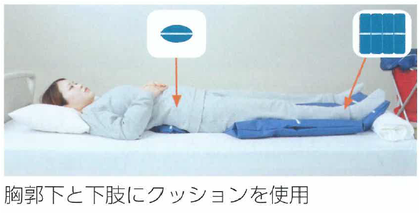

仰臥位のポジショニング
①実施前の準備
1ベッドの高さを調整する
2患者さんのベッド上の位置を調整する
3重さのかかっている場所を確認する
4クッションを用意する（ウェーブ形1個、スティック形2個）
②ポジショニング
1臀部の重さを足側に移すため、大腿部の根元までクッションをしっかり差し込む

2下肢を軽く押し付けるようにしてクッションに重さを乗せる（両側とも）

3上腕部にも根元までクッションを差し込み、軽く押し付けるようにして重さを乗せる（両側とも）。圧がかかっている部位の圧抜きをする

4表情、姿勢のゆがみ、クッションを引っ張ったときに抜けないか確認する

③応用例：下肢に拘縮がある場合
1下肢の重さをしっかり支えられるように、高さが作れるクッションを使用する

※下肢のクッションを「デルタ型」2個に変更
④応用例：下肢の拘縮が強い場合
1よりしっかりと下肢の重さを支えることが必要なためクッションを重ねて使用する

※下肢に「デルタ型」2個と「ウェーブ形」のクッションを重ねて使用
「身体の沈み込み」や「足の広がり」を防ぐポジショニング
術後の患者さんに厚手のマットレスを使用している場合などに、腰部が沈み込んだり、それにより足が広がったりすることがありませんか。

そのような場合、以下のようなポジショニングが有効な場合があります。このようなポジショニングにより、弛緩した下肢のアライメントが修正されます。また、腰部の沈み込みが軽減することで、胸郭が開き呼吸の改善も期待できます。
